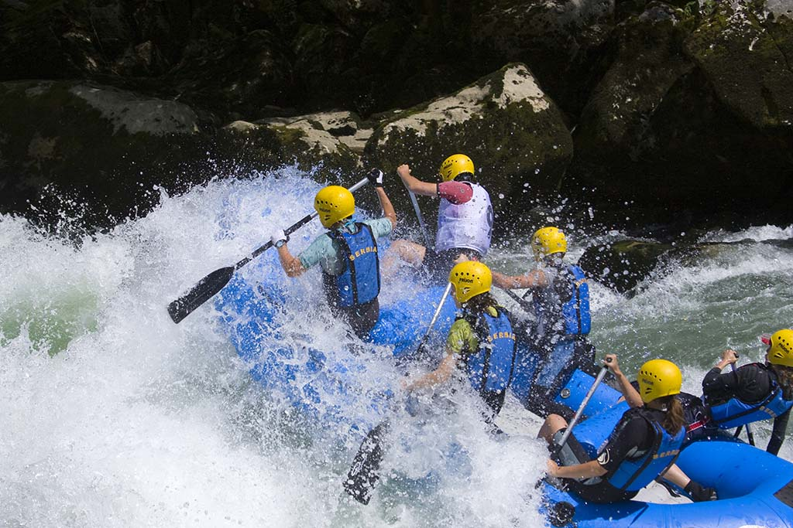

At Building Your Dreams, our mission is to transform bold, lifelong ambitions into unforgettable real-world adventures. We believe that everyone carries a dream destination, a daunting peak, or a transformative journey waiting to be claimed, and we exist to bridge the gap between imagination and execution. Through expertly crafted expeditions, personalized guidance, and an unwavering commitment to safety and authenticity, we empower everyday explorers to step outside their comfort zones, conquer new horizons, and return home with stories that define a lifetime.

Building your dreams
History
Building Your Dreams began in 2018 around a kitchen table covered in worn topographic maps, half-finished notebooks, and a simple conviction: too many people put their boldest life adventures on hold waiting for "someday." What started as a two-person passion project organizing custom, small-group mountain treks and off-the-grid coastal expeditions quickly grew by word of mouth as travelers returned home transformed by experiences tailored specifically to their personal milestones. Over the years, the company expanded from local weekend escapes to leading bespoke international journeys across rugged peaks, hidden valleys, and uncharted trails, never losing its founding spirit of turning each client's personal bucket-list dream into a carefully crafted reality.